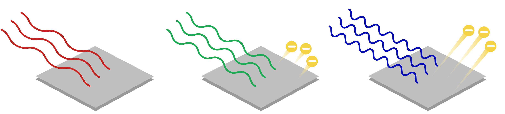
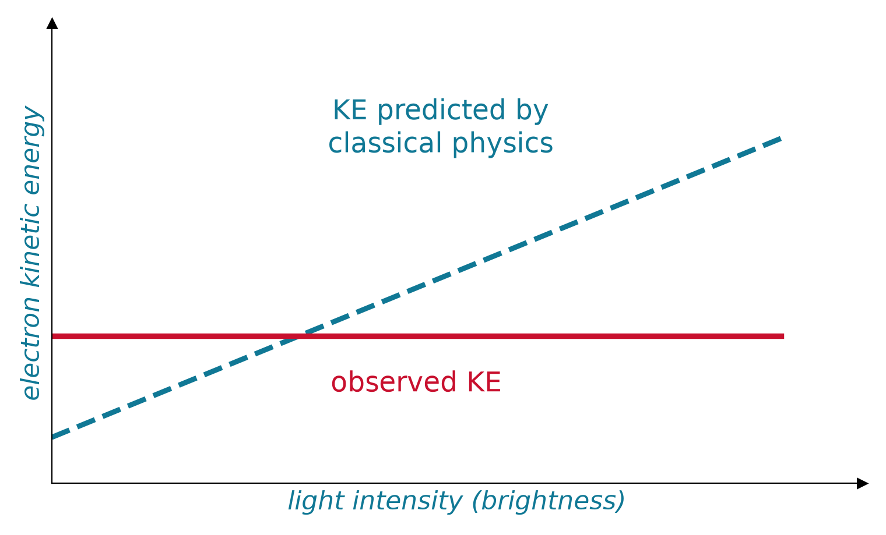
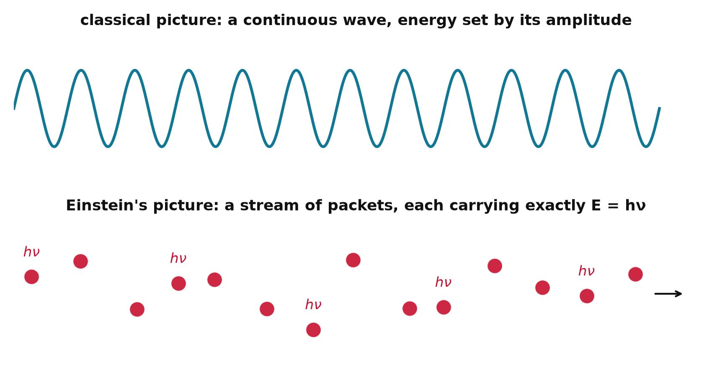
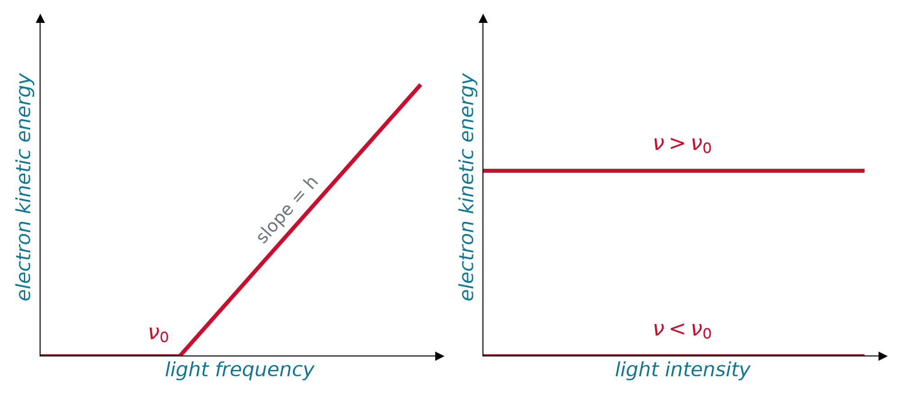
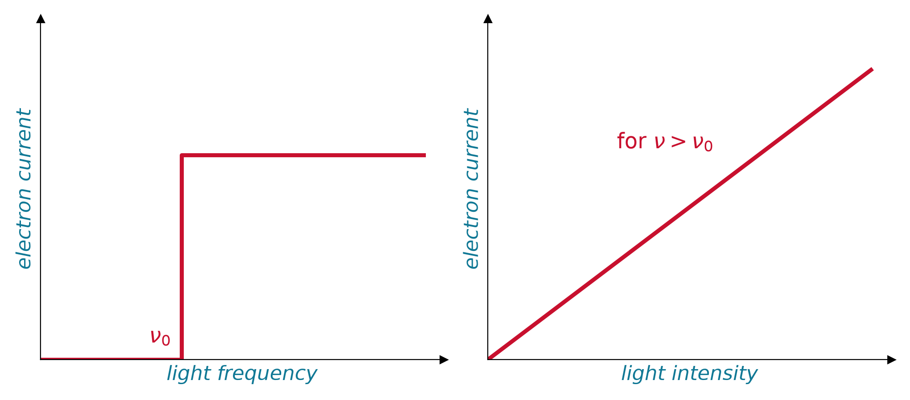
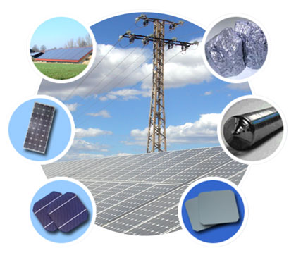

Chem 3240 · Lecture 1.3



\[ E_{photon} = h\nu = \frac{hc}{\lambda} \]


One photon hands all its energy to one electron: part pays the exit fee, the rest is speed.
\[E_{photon} = W_0 + KE \qquad\Longrightarrow\qquad h\nu = h\nu_0 + \frac{mv_e^2}{2}\]
The line is \(KE_{max} = h\nu - W_0\): its slope is always \(h\), only the threshold moves with the metal. The dot is your light: on the line means electrons out, on the axis means nothing, however bright.
{
const hEV = 4.1357e-15, c = 2.998e8;
const nu0 = W0 / hEV / 1e14;
const nuL = c / (lam * 1e-9) / 1e14;
const KE = hEV * nuL * 1e14 - W0;
const line = d3.range(0, 25, 0.1).map(n => ({x: n, y: n > nu0 ? hEV * n * 1e14 - W0 : 0}));
return Plot.plot({
width: 950, height: 320,
x: {label: "frequency (10^14 Hz)", domain: [0, 25]},
y: {label: "KE_max (eV)", domain: [-0.3, 6.5]},
marks: [
Plot.rect([{x1: c / 750e-9 / 1e14, x2: c / 380e-9 / 1e14, y1: -0.3, y2: 6.5}], {x1: "x1", x2: "x2", y1: "y1", y2: "y2", fill: "gold", fillOpacity: 0.15}),
Plot.ruleY([0], {stroke: "#333"}),
Plot.ruleX([nu0], {stroke: "#999", strokeDasharray: "2,3"}),
Plot.line(line, {x: "x", y: "y", stroke: "#C8102E", strokeWidth: 2.5}),
Plot.dot([{x: nuL, y: Math.max(KE, 0)}], {x: "x", y: "y", r: 8, fill: KE > 0 ? "#107895" : "#999"})
]
});
}md`Photon energy **${(4.1357e-15 * 2.998e8 / (lam * 1e-9)).toFixed(2)} eV** at ${lam} nm vs work function **${W0.toFixed(2)} eV**: ${(4.1357e-15 * 2.998e8 / (lam * 1e-9)) > W0 ? `electrons fly off with KE_max = **${(4.1357e-15 * 2.998e8 / (lam * 1e-9) - W0).toFixed(2)} eV**` : "**no electrons**, no matter how bright the light"}`
Light is quantized into photons: frequency sets each photon’s energy (and the ejected electron’s kinetic energy), while intensity sets only how many electrons fly off.
Chem 3240 · Quantum Mechanics